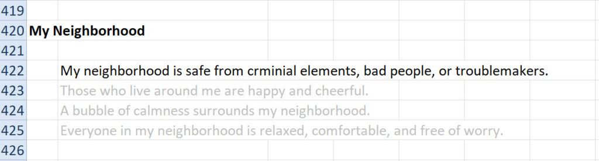
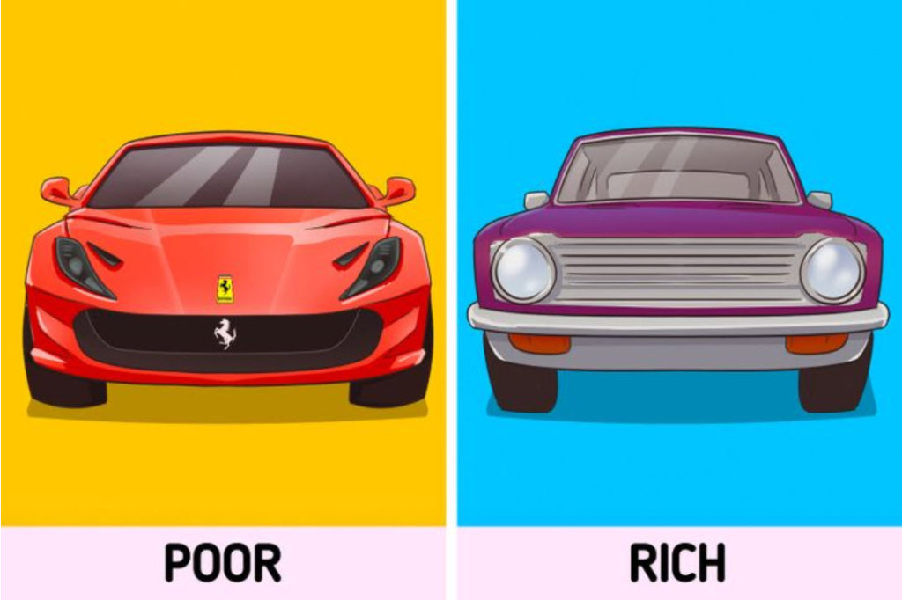
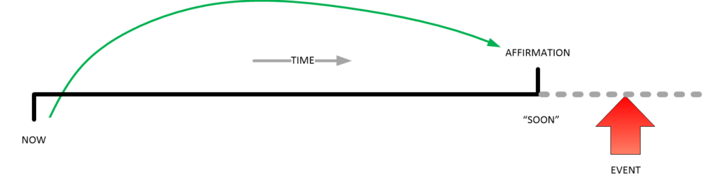
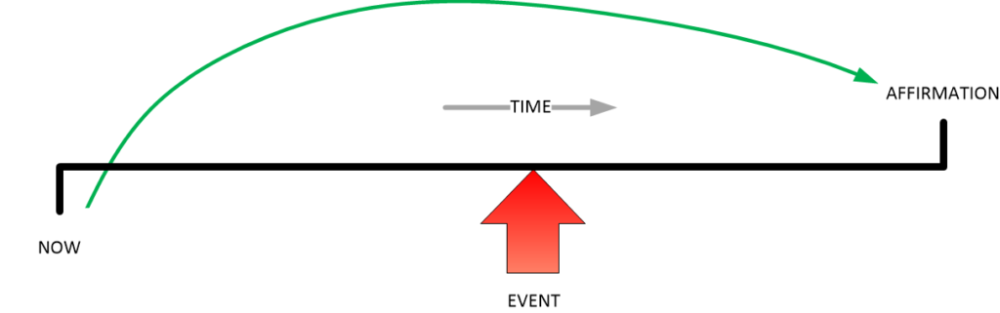
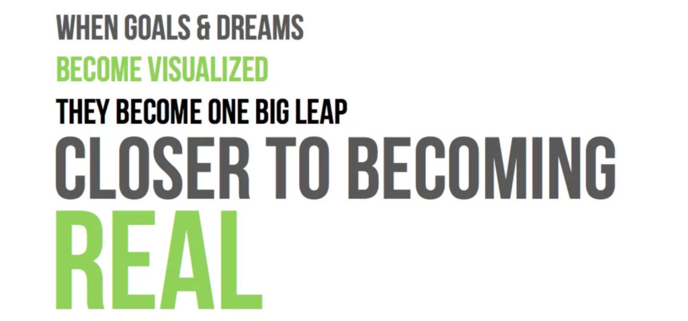
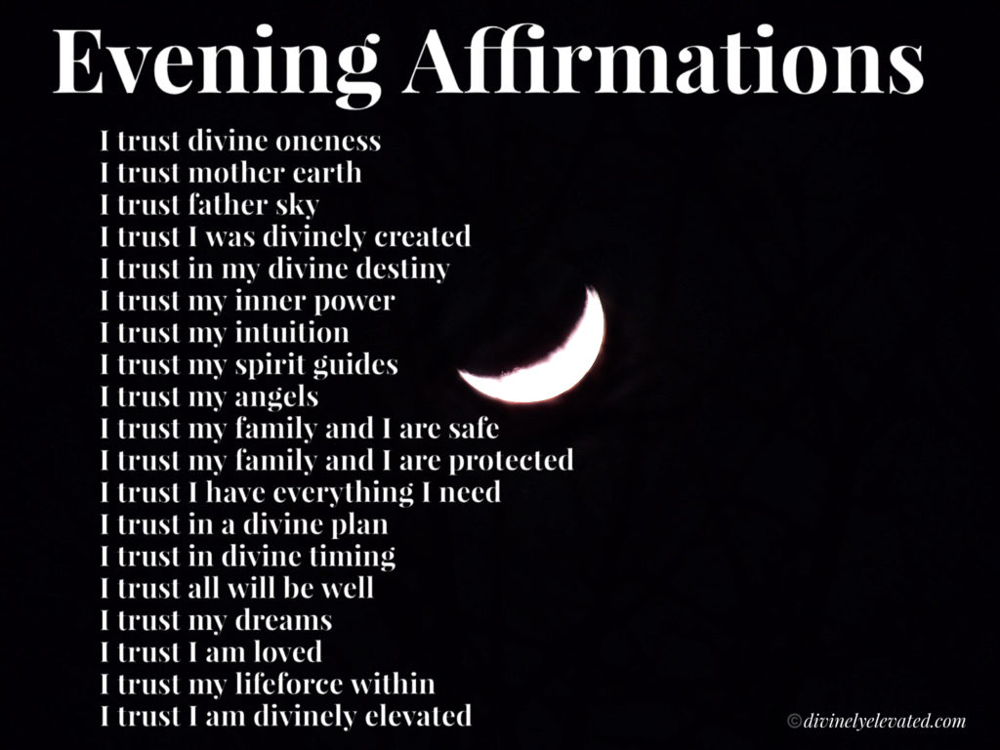

Here, in this post, we will cover some passages that I pulled out of my Affirmation Campaign notebook. Yeah. I’ll bet you all never realized that I have an affirmation “handbook”, well I do. I have a ton load of notebooks and notes all lying around everywhere. Being “old school”, I don’t rely on the computer alone.
One computer crash and you lose everything. One raid by religious fundamentalists in Arkansas and you’ll never see your notes ever again. One lost password, and you will be forever locked out of your writings.
OK.
Well, anyways, this post is a collection of my notes and thoughts on affirmation campaigns. I am including techniques and thoughts that I actually use within my very own personal campaigns. I like to think that others might find these techniques to be of use.
The first technique that I will cover is “font shading”.
Font Shading
I like to use “font shading” to keep track of the weighed importance of a given affirmation.

Font shading is very useful in keeping the size of a prayer / affirmation campaign down to a practical size. If you have a large affirmation list, like I do, you will find that it is very time consuming to read the list out loud. Most people keep lists that they can read in under ten minutes. While mine tend to be very lengthy.
In general, if your list is over fifteen minutes long when you read your affirmations, you need to either cut it down or conduct your campaign using the “font shading” technique.
The use of this technique is very simple. As follows…
- Text in black color – read out loud.
- Text in light grey color – just read silently with your eyes.
It enables the same results in a fraction of the time when conducting an affirmation prayer campaign. Just make sure that the “highlighted” text in black are the most significant important elements of your campaign.
Pacing Techniques
Pacing refers to the system that you use for on / off affirmation campaigns. I have discussed this subject in other posts. Essentially, with each and every affirmation campaign are three elements. Which are…
- Reading / reciting your affirmations for a set period of time.
- A complete stop with zero affirmation reading for a set period of time.
- The start of the follow-up affirmation campaign.
And as I had stated earlier, it is critically important that all prayer / affirmation campaigns follow the same template. You define a set period of time where you read out your affirmations, and then stop. The period that you stop should be approximately the same length as the time devoted to the affirmations. Then once the period of time is complete, you repeat only with revised affirmations.
Here, we are going to look at some of the many variations of this process.
And they are;
- Trot
- Stroll
- Mosey
- Gallop
The pacing of this process depends on you and what you intend to get out of the process. It depends on your personality. It depends on your situation. It depends on you.
Now…
Let’s look at the different kinds of ways to pace your affirmation campaigns.
- The Trot – (2 month 1 on / 1 off cycle)
The Trot is exactly like it is presented. It is a steady, but relentless sequence and series of campaigns all separated by equal duration breaks. After a while in experimenting with different systems, I (myself) have settled on this pace for me personally. I run a relentless one month on, then one month off, then repeat. For me, it has been working out splendidly, as it permits me to actively adjust thought navigation quickly and get near immediate feedback on the relative success of the campaigns.
- The Stroll – (6 month 3 on / 3 off cycle)
This is a more leisurely pace, and a pace that I recommend for newbies to prayer affirmation campaigns. The length of a campaign is one season. It is three months long. Followed by three months off. What is great about this pace is that you can get the best mixture of observed results and learned skills, while at the same time avoiding over all fatigue and depression that things seem to be taking too long to manifest.
- The Mosey – (1 year 6 on / 6 off cycle)
This is a much longer affirmation effort. You typically run the affirmation campaign for around six months, and then stop for six months. Because the campaign runs for so long, you need to make sure that your affirmations are at an easy to recite size. Too long, and you will tend to give up quickly. This system is perhaps one of the best systems, and the nice long pause really gives you time to reflect, think and enjoy life. But one of the problems with this is that the pause is so long (six months) that you might forget to start a new affirmation follow-up campaign afterwards.
- The Gallop – Sawtooth effort.
This is a rather different technique for pacing your prayer campaigns. It requires some planning. In this technique you use different prayer affirmation lists and then rotate the lists through the campaign.
You have two affirmation lists. (You can call them “A” and “B”, or “Red” and “Blue”, if you want to.) One week you read your “red” affirmations. Then the next week you stop. Then on the third week, you read your “blue” affirmations. Then you stop for a whole week. Then you repeat this cycle. You do this for a minimum of two months.
This system has advantages.
It enables you to cut down the size of your affirmations to something more manageable. The drawback however should be obvious. If the “red” objectives differ substantially from the “blue” objectives, you will end up zig-zagging back and forth in the general directions of your objectives, but have a difficult time arriving there. However, if your objectives are complementary, or mutually exclusive, you will be able to enjoy the objective realization in a shorter amount of time.
Our expectations are influenced by the media, not reality.
Many people put goals and desires in their affirmations based upon their impressions made by the media. This is a danger. It might have you investing in a $75,000 car instead of spending the year cavorting with pretty girls on the beach. It might have you spending thousands of dollars on the latest outfits instead of having your house paid off. It might misdirect your desires to what you SHOULD own, instead of what your heart needs.
Don’t let your decisions be influenced by appearance.

Hollywood and media provide dangerous illusions.
The truth is that everyone is different.
People tend to evaluate the same situation differently depending on the environment. This was proven by an experiment where people were asked to evaluate products that were located in 2 areas, one with laminate flooring and another with carpet. Respondents walking on the carpet gave the same products better feedback.
I remember a study that was comparing restaurants. The food was identical, the environment was identical, but one restaurant had heavy plates and massive silverware. The other had cheap plates and light flatware. Obviously the customers preferred the more robust eating environment.
For instance, when choosing a job, you might accept one with a nice office, while rejecting another opportunity with better career growth. So to make decisions that will lead you to financial success, try to make sure that visual attributes don’t affect you.
And this means, don’t let the idea “this is a great job” or everyone knows that you will be happier if you XXXXXXX. It’s all a lie.
Search your heart about what matters to you. Define what it is, and navigate to that objective.
Introductory Transition Mechanisms
If your goal is really “far out”, complex or distant, you might want to break it down into bite sized steps. For instance, if you want to become the President of the Untied States, you might want to start with affirmations closer to your current situation. Then move forward thinking of a series of battles and campaigns to get you where you want to be. Like this, perhaps…
- Dog catcher.
- Local Sheriff.
- State Representative.
- Federal Representative.
- Federal Senator.
- VP of the USA.
- President of the USA.
In a like way, you need to be able to map our your most cherished and distant desires so that your objectives are manifested.
What do I mean?
I mean something like this…
- 2020 through 2026 – local government.
- 2026 through 2034 – State government.
- 2034 through 2045 – Federal government.
Plan things out in detail, and have a long term vision that matches your long term plans.
Affirm the NOW
I suppose that everyone has heard the (tired old) saying “live in the now“. But, gosh and golly, is it ever so important when conducting a prayer affirmation campaign.
Mindfulness, or living in the now, is making the choice to focus on our present and live in our experiences. It sounds like something that should be easy, but it takes effort and practice. If you are struggling to live in the now, it might be because of one of these seven things. -7 Things That Keep You From Living In the Now | Power of Positivity
In the movie “Wayne’s World” there is even a parody of this saying. Where the main character tells his “side kick” Garth to “live in the now!”. It’s actually pretty darn funny.
But…
The point of this should not be lost on anyone.
The "NOW" is a very specific point in your travels on the MWI and world-lines. It is a description of the world-line that you are inside at the moment that you made the affirmation statement.
When you conduct your prayer affirmation campaign you must specifically define the time for the affirmations to take place. You can do this a number of ways, and the way that I recommend is this…
- Do NOT state a date, or a time for it to manifest.
Of course, it is pretty much a given that the affirmation will manifest. But it will do so in accordance with the balance (the rest of) your other affirmations, and what ever your current life situation actually is.
If your affirmation campaign has prayers; A, B, C, D and E in it, then the entire campaign will not distinguish the priority of the implementation of any of those prayers. Rather, instead, they will manifest in the greatest likelihood of manifestation given your current navigational vector. The only way to control this is to say something like. A will happen first, then B, then C, then D, and finally E.
But, all this being stated, there are things that you MUST NOT do.
You should NOT use any of the following terms regarding when the affirmation will manifest…
- General dates like “soon”, “near”, “going to happen”, “one of these days”, “eventually”, “after a while”, “later”, and other terms that point to a general time somewhere in the future.
Don’t say an affirmation anything like this…
Eventually, some day, my dream of having a little raise in salary might come true.
Because what you want is things to start NOW. Maybe not manifest NOW, but to start to move things in place NOW.
You see, the moment you verbalize a word, you are generating a thought AT THAT MOMENT. How that thought will materialize in your physical reality is a direct function of the sentence structure.
If you say something like…
Really soon, I will get a big salary increase.
You can guarantee that you set your “world-line navigation system” destination coordinates towards “a big salary increase”. It’s input into your navigation console, and you are already on the path towards that goal.
But…
Wait!
What will actually happen?
Well, look at it plotted or charted out, and see.

You stated “really soon”. This modifier is “soft”. Meaning that it is not precise and well defined. In terms of glaciers, really soon could mean 500 years. In terms of an old many, it could mean five years. In terms of an infant, it could mean five minutes.
What you want to do is avoid “soft” affirmations.
You want everything to be immediately encoded (which is automatic), but implemented within a reasonable amount of time. In fact, you want the implementation to be within a reasonable amount of time IN ALIGNMENT with the rest of the prayers during your current prayer campaign.
So I would recommend something along these lines, instead…
I am given a big salary increase.
It’s straight forward, simple, defined and is not modified by any aspect of time.
Now, of course, you can just as well say something along these lines…
Now, my reality is strongly conducive for a big salary increase.
But, isn’t that a bit complex? I would argue that simpler is better. And let the navigation engine move your consciousness to those world-lines properly.
My salary has been increased by a large amount.
This doesn’t place your reality somewhere in the future. Instead, it places you past that event. Which is what you actually want.

So I must advise to plot your navigation for each specific affirmation such that you are in a reality where that event has already happened in the past. Knowing, full well, that while it has not yet happened, the systems are happening now to bring you to the point.
And…
Well, this is pretty much how all your affirmations should read. Your campaign should describe what your life is like AFTER the affirmations manifest.
If it does not, then you are not doing things efficiently.
There are exceptions, of course. You can describe how the affirmations implement in real time, For example.
Incorporate all the characteristics of success in your campaign
It doesn’t really matter what your affirmation campaign consists of or what details you have within it. The basic elements of a successful life should have some part or role in your affirmation campaign.
Of course, you can go ahead to any website on the internet and you will see such things listed as [1] creativity, [2] resourcefulness, [3] persistence, and so on. And while all those things are certainly important, they are also part of your personality. Something that was formed in your early childhood by the age of three.
I am not talking about that.
Though, go ahead and add these elements to your campaign if you want to. Here’s some links to get you started…
- 5 Traits of Success in College & in Life
- Top 10 Qualities of Highly Successful People | Inc.com
- The 6 Personality Characteristics of Success and Failure …
- 10 Essential Characteristics of Highly Successful …
- 11 Traits of Highly Successful people
- 6 Characteristics of a Successful Person That Make Them …
- The Six Essential Characteristics of Successful People | AMA
So, if you want to be and have a success, you might want to go ahead and use the affirmation campaign to alter your personality to incorporate these characteristics.
But…
That is NOT what I am talking about here.
I am talking about incorporating those elements that your personality, your experience, your friendships, your knowledge, and your skills have no control over…
- Luck
- Being in the right place at the right time.
- Having the right set of skills and connections when you need them.
- A favorable environment.
- Awareness.
And, if there is one thing that I know. It’s this. Those business owners, for the most part, just so happened to be at the right place at the right time and they pounced on the opportunity. For you to have the life that you desire it will require a combination of numerous aspects and changes in your life. It will require your resourcefulness, your ability to know that an opportunity has arrived. It will require you to use your skills, and to have the knowledge on how to use the tools at your disposal. And…
It will also include some “luck”.
And “luck” is actually the positioning of a desirable world-line within close proximity.
So, what this aspect of your affirmation campaign is to specify, specifically that the “pivot point” (that will make your affirmations occur) will exist and happen in one of your immediate world-lines.
Luck is always part of my life. I am always in the right place at the right time. I have the right set of skills, and connections whenever I need them. My affirmations have found a fertile and favorable environment from which to grow and manifest.
Ah, but this isn’t just “opportunity”…
Opportunities
You need to be diabolically precise when stating that “opportunities” will manifest for you. You would be surprised at the kinds of “opportunities” used to come my way until I reigned them in and forced them to conform to my desires.
In my affirmations I said that that “opportunities” would come into my life. Yet, I failed to associate those opportunities with my goals. So what happened?
Yeah. You guessed it.
All sorts of “out of the blue” things were presented to me. All were opportunities, but nothing that was of interest to me specifically.
Like…
- Given a chance to gather companies to sponsor European Soccer (football) teams. You know, wear their logos on their clothing. A lot of work. But an opportunity.
- Given a chance to sell Generic Viagra in Iran. No problem, except that I am an American passport holder. This could get me in a full shit-load of trouble.
- Being on a Judge Committee for English language students to debate the differences between ancient Chinese and Japanese history in English.
- Create an on-line marketplace (B2B) to sell caskets to funeral homes around the world.
- Run a crew of people that would decontaminate public places, hotels, and vehicles from those who had COVID and other infectious diseases.
And many more.
Unless you specify that you want the “opportunities” to be germane to your other affirmation goals, you will end up getting a ton load of useless opportunistic ventures. Sure, eventually with some hard-work and “elbow grease” you can make things happen. But unless they are part of your over-riding goals, you will just ignore these opportunities as worthless.
So, be careful on what you desire as “opportunities”. Connect them with specific results.
I have an opportunity that will make me a large fortune. I am provided an opportunity to meet the woman of my dreams. I have an opportunity to buy my dream house at a dirt cheap price.
Always specify specifically what your opportunity will provide for you.
Visualization of your target life.
Oh, it’s not just enough to say the affirmations. You need to visualize you enjoying your target goals.
You need to have a reminder at the end of your affirmation list, to visualize your goals. Visualization will speed up the implementation. Maybe something like this…

Visualize you living in the situation that you affirm during your prayer campaign. Doing so will accelerate the manifestation of that situation.
Don’t allow counter productive bad habits.
So, you are spending every day doing your affirmations. You say them out load and you visualize. But when people talk you normally, at home, in the bar, or on the street, you become self-depreciating. They ask you how you are doing and you say “oh, so-so”, or your friends ask you if you have plans or what you are going to do, and you “oh, I don’t know. I’ll just do nothing”.
If you have nothing good to say… then say nothing.
From now on every thing out of your mouth must be an extension of your vocalization. Do not allow anything bad out of your mouth. Do not vocalize anything negative. Do not be gloated into negativity.
Each negative statement erases one affirmation campaign session.
Stifle your depreciating natures, and for good golly sakes STAY THE FUCK AWAY FROM NEGATIVE PEOPLE.
Conclusion
I have become VERY GOOD at manifesting my desires. I think that I am doing “something” right. And I like to help others duplicate my success. Thus this series in Prayer and Intention Manifestation.
Never the less…
Every now and then I check out what is going on in the rest of the internet on thoughts regarding things that I am focused on. This includes China, MAJ, American culture, and Intention.
What a big disappointment!
- China…. hate, hate, hate, lies, distortions and more hate.
- MAJ… nothing. Zero. Na-da.
- American culture… cluster fuck going down the commode.
- Intention… they all haven’t a fucking clue.
I figured that it was high time to continue my writings on this subject after I read a particularly erroneous piece. I mean, their hearts are in the right place, but boy oh boy, is their advice wrong.
Seriously you need to be careful and not “rubber stamp” other’s mistakes. Here’s an example of one of the “better” websites out there. Here a partial list of the suggestions for affirmations.
I am worthy of love. I carry strength and resilience with me. My every step is one of courage. I have the ability to overcome any challenge life gives me. (Find out how compassion can improve your life: Overcome... Abundance and love flow from me. I am pure beauty. I am a radiant and joyous person. I am cocooned in the loving energy of the Universe. I am successful. I am enough. -50 Self-Loving Affirmations – Uncover Your Joy
All in all, it’s not really a BAD group of affirmations. It’s just that they are primarily focused on changing the persons attitude about life, emotions and themselves. Not about world-line navigation. This is a pretty common problem that I can see is duplicated all over the internet.
Here’s another example.
This website suggests that you perform these affirmations every evening. I am sure that you will be a very trusting person afterwards…

Ah.
For certain, you will be a more trusting person. But will it buy you an ice cream cone the day after?
As I have said, it seems to me that many of these prayer / affirmation suggestions are not associated with world-line navigation or any sort of defined campaign. Rather they are just nice sayings to make you feel better about yourself.
How about this list…
List of 37 Abundance Affirmations 1. Whatever I can conceive, I believe. 2. If I see it in my mind, I am going to hold it in my hand. 3. I open myself to receiving abundance of the Universe. 4. The Universe provides me with all that I will ever need. 5. I am richly blessed. 6. I am love. 7. I am One with Spirit. 8. My higher self rules over my ego. 9. My spirit dances in step with joy in my heart. 10. I am whole and in perfect health 11. Every cell in my body vibrates with health and positive energy. 12. Beauty is the breath of my soul. 13. I see beauty everywhere I go. 14. I am financially wealthy! 15. Checks arrive in my inbox every single day. 16. My wealth grows in ever increasing amounts. 17. I love my car! 18. I live in the house of my dreams; in tranquil surroundings filled with love, a blessed family and happy kids!! 19. I attract love everywhere. 20. My relationships are harmonious! 21. I work as and when I want to, anywhere I want to. 22. My business is a resounding success! 23. I enjoy absolute freedom! 24. I experience the world in all its glory. 25. I have a wealth of fond memories. 26. My life is one big adventure. 27. I serve the community with love. 28. I help those in need. 29. My teachers inspire me to live in the now! 30. My inner home is a peaceful retreat, a storehouse of practical wisdom. 31. I celebrate life. 32. Inspiration flows easily to me. 33. Opportunities arrive at the right time in the right place 34. I am divinely guided in all that I do. 35. Miracles manifest everyday in wondrous ways! 36. My prayers are always answered, in support of my dreams! 37. Love and gratitude…Thank you, thank you, thank you.
Hey! You long term MM readers and affirmation students, can you pick out the mistakes in the list? There’s a bunch, don’t you know, but some are ok.
Maybe I should take a “whack” at it, eh?
I have a wealth of fond memories. Um. Really? That's what you want in your intention campaign. I mean different strokes for different folks and all that. But, doesn't it imply that you will be living in your past?
Or…
I love my car! Pretty general. Easy to obtain, but you will have an obsession with a material possession. I cannot see that as being good.
I see a lot of these affirmations as pleasant distractions. They will take you places, and many will have your going around and around in circles. But still, many of those creating these affirmations have their heart in the right place. The results of the manifestations will improve that particular person in some way. Most seem to relate to feelings and emotions that the person has.
Certainly getting a hold of out-of-control emotions is a good thing.
So, you all need not be as critical as I am.
Just be mindful of what you affirm. As this article stated, “opportunities” can be wildly off target. And if you follow these pre-packaged affirmations you might end up going to places that you might not to be. Be careful.
33. Opportunities arrive at the right time in the right place
Be careful.
I hope that in some way that I can improve the dreams and lives of those that this MM venue touches.